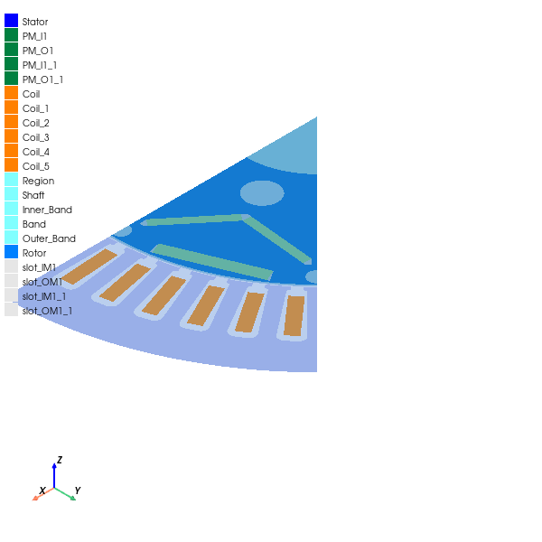

Download this example
Download this example as a Jupyter Notebook or as a Python script.
PM synchronous motor transient analysis#
This example shows how to use PyAEDT to create a Maxwell 2D transient analysis for an interior permanent magnet (PM) electric motor.
Keywords: Maxwell 2D, transient, motor.
Perform imports and define constants#
Perform required imports.
[1]:
import csv
import os
import tempfile
import time
from operator import attrgetter
[2]:
import ansys.aedt.core
Define constants.
[3]:
AEDT_VERSION = "2024.2"
NUM_CORES = 4
NG_MODE = False # Open AEDT UI when it is launched.
Create temporary directory and download files#
Create a temporary directory where downloaded data or dumped data can be stored. If you’d like to retrieve the project data for subsequent use, the temporary folder name is given by temp_folder.name.
[4]:
temp_folder = tempfile.TemporaryDirectory(suffix=".ansys")
Initialize dictionaries#
Dictionaries contain all the definitions for the design variables and output variables.
Initialize definitions for th stator, rotor, and shaft#
Initialize geometry parameter definitions for the stator, rotor, and shaft. The naming refers to RMxprt primitives.
[5]:
geom_params = {
"DiaGap": "132mm",
"DiaStatorYoke": "198mm",
"DiaStatorInner": "132mm",
"DiaRotorLam": "130mm",
"DiaShaft": "44.45mm",
"DiaOuter": "198mm",
"Airgap": "1mm",
"SlotNumber": "48",
"SlotType": "3",
}
Initialize definitions for stator windings#
Initialize geometry parameter definitions for the stator windings. The naming refers to RMxprt primitives.
[6]:
wind_params = {
"Layers": "1",
"ParallelPaths": "2",
"R_Phase": "7.5mOhm",
"WdgExt_F": "5mm",
"SpanExt": "30mm",
"SegAngle": "0.25",
"CoilPitch": "5", # coil pitch in slots
"Coil_SetBack": "3.605732823mm",
"SlotWidth": "2.814mm", # RMxprt Bs0
"Coil_Edge_Short": "3.769235435mm",
"Coil_Edge_Long": "15.37828521mm",
}
Initialize definitions for model setup#
Initialize geometry parameter definitions for the model setup.
[7]:
mod_params = {
"NumPoles": "8",
"Model_Length": "80mm",
"SymmetryFactor": "8",
"Magnetic_Axial_Length": "150mm",
"Stator_Lam_Length": "0mm",
"StatorSkewAngle": "0deg",
"NumTorquePointsPerCycle": "30",
"mapping_angle": "0.125*4deg",
"num_m": "16",
"Section_Angle": "360deg/SymmetryFactor",
}
Initialize definitions for operational machine#
Initialize geometry parameter definitions for the operational machine. This identifies the operating point for the transient setup.
[8]:
oper_params = {
"InitialPositionMD": "180deg/4",
"IPeak": "480A",
"MachineRPM": "3000rpm",
"ElectricFrequency": "MachineRPM/60rpm*NumPoles/2*1Hz",
"ElectricPeriod": "1/ElectricFrequency",
"BandTicksinModel": "360deg/NumPoles/mapping_angle",
"TimeStep": "ElectricPeriod/(2*BandTicksinModel)",
"StopTime": "ElectricPeriod",
"Theta_i": "135deg",
}
Launch AEDT and Maxwell 2D#
Launch AEDT and Maxwell 2D after first setting up the project and design names, the solver, and the version. The following code also creates an instance of the Maxwell2d class named m2d.
[9]:
project_name = os.path.join(temp_folder.name, "PM_Motor.aedt")
m2d = ansys.aedt.core.Maxwell2d(
project=project_name,
version=AEDT_VERSION,
design="Sinusoidal",
solution_type="TransientXY",
new_desktop=True,
non_graphical=NG_MODE,
)
PyAEDT INFO: Python version 3.10.11 (tags/v3.10.11:7d4cc5a, Apr 5 2023, 00:38:17) [MSC v.1929 64 bit (AMD64)]
PyAEDT INFO: PyAEDT version 0.12.dev0.
PyAEDT INFO: Initializing new Desktop session.
PyAEDT INFO: Log on console is enabled.
PyAEDT INFO: Log on file C:\Users\ansys\AppData\Local\Temp\pyaedt_ansys_f70f2e67-1448-4fce-b0d1-6522fc899bea.log is enabled.
PyAEDT INFO: Log on AEDT is enabled.
PyAEDT INFO: Debug logger is disabled. PyAEDT methods will not be logged.
PyAEDT INFO: Launching PyAEDT with gRPC plugin.
PyAEDT INFO: New AEDT session is starting on gRPC port 50283
PyAEDT INFO: AEDT installation Path C:\Program Files\AnsysEM\v242\Win64
PyAEDT INFO: Ansoft.ElectronicsDesktop.2024.2 version started with process ID 5128.
PyAEDT INFO: Project PM_Motor has been created.
PyAEDT INFO: Added design 'Sinusoidal' of type Maxwell 2D.
PyAEDT INFO: Aedt Objects correctly read
Define modeler units#
[10]:
m2d.modeler.model_units = "mm"
PyAEDT INFO: Modeler2D class has been initialized!
PyAEDT INFO: Modeler class has been initialized! Elapsed time: 0m 1sec
Define variables from dictionaries#
Define design variables from the created dictionaries.
[11]:
for k, v in geom_params.items():
m2d[k] = v
for k, v in wind_params.items():
m2d[k] = v
for k, v in mod_params.items():
m2d[k] = v
for k, v in oper_params.items():
m2d[k] = v
Define path for non-linear material properties#
Define the path for non-linear material properties. Materials are stored in text files.
[12]:
filename_lam, filename_PM = ansys.aedt.core.downloads.download_leaf(
destination=temp_folder.name
)
Create first material#
Create the material "Copper (Annealed)_65C".
[13]:
mat_coils = m2d.materials.add_material("Copper (Annealed)_65C")
mat_coils.update()
mat_coils.conductivity = "49288048.9198"
mat_coils.permeability = "1"
PyAEDT INFO: Materials class has been initialized! Elapsed time: 0m 0sec
PyAEDT INFO: Adding new material to the Project Library: Copper (Annealed)_65C
PyAEDT INFO: Material has been added in Desktop.
Create second material#
Create the material "Arnold_Magnetics_N30UH_80C". The BH curve is read from a tabbed CSV file. A list named BH_List_PM is created. This list is passed to the mat_PM.permeability.value variable.
[14]:
mat_PM = m2d.materials.add_material(name="Arnold_Magnetics_N30UH_80C_new")
mat_PM.update()
mat_PM.conductivity = "555555.5556"
mat_PM.set_magnetic_coercivity(value=-800146.66287534, x=1, y=0, z=0)
mat_PM.mass_density = "7500"
BH_List_PM = []
with open(filename_PM) as f:
reader = csv.reader(f, delimiter="\t")
next(reader)
for row in reader:
BH_List_PM.append([float(row[0]), float(row[1])])
mat_PM.permeability.value = BH_List_PM
PyAEDT INFO: Adding new material to the Project Library: Arnold_Magnetics_N30UH_80C_new
PyAEDT INFO: Material has been added in Desktop.
Create third material#
Create the laminated material 30DH_20C_smooth. This material has a BH curve and a core loss model, which is set to electrical steel.
[15]:
mat_lam = m2d.materials.add_material("30DH_20C_smooth")
mat_lam.update()
mat_lam.conductivity = "1694915.25424"
kh = 71.7180985413
kc = 0.25092214579
ke = 12.1625774023
kdc = 0.001
eq_depth = 0.001
mat_lam.set_electrical_steel_coreloss(kh, kc, ke, kdc, eq_depth)
mat_lam.mass_density = "7650"
BH_List_lam = []
with open(filename_lam) as f:
reader = csv.reader(f, delimiter="\t")
next(reader)
for row in reader:
BH_List_lam.append([float(row[0]), float(row[1])])
mat_lam.permeability.value = BH_List_lam
PyAEDT INFO: Adding new material to the Project Library: 30DH_20C_smooth
PyAEDT INFO: Material has been added in Desktop.
Create geometry for stator#
Create the geometry for the stator. It is created via the RMxprt user-defined primitive (UDP). A list of lists is created with the proper UDP parameters.
[16]:
udp_par_list_stator = [
["DiaGap", "DiaGap"],
["DiaYoke", "DiaStatorYoke"],
["Length", "Stator_Lam_Length"],
["Skew", "StatorSkewAngle"],
["Slots", "SlotNumber"],
["SlotType", "SlotType"],
["Hs0", "1.2mm"],
["Hs01", "0mm"],
["Hs1", "0.4834227384999mm"],
["Hs2", "17.287669825502mm"],
["Bs0", "2.814mm"],
["Bs1", "4.71154109036mm"],
["Bs2", "6.9777285790998mm"],
["Rs", "2mm"],
["FilletType", "1"],
["HalfSlot", "0"],
["VentHoles", "0"],
["HoleDiaIn", "0mm"],
["HoleDiaOut", "0mm"],
["HoleLocIn", "0mm"],
["HoleLocOut", "0mm"],
["VentDucts", "0"],
["DuctWidth", "0mm"],
["DuctPitch", "0mm"],
["SegAngle", "0deg"],
["LenRegion", "Model_Length"],
["InfoCore", "0"],
]
stator_id = m2d.modeler.create_udp(
dll="RMxprt/VentSlotCore.dll",
parameters=udp_par_list_stator,
library="syslib",
name="my_stator",
)
Assign properties to stator#
Assign properties to the stator. The following code assigns the material, name, color, and solve_inside properties.
[17]:
m2d.assign_material(assignment=stator_id, material="30DH_20C_smooth")
stator_id.name = "Stator"
stator_id.color = (0, 0, 255) # rgb
[18]:
# to be reassigned: m2d.assign material puts False if not dielectric
stator_id.solve_inside = True
Create outer and inner PMs#
Create the outer and inner PMs and assign color to them.
[19]:
IM1_points = [
[56.70957112, 3.104886585, 0],
[40.25081875, 16.67243502, 0],
[38.59701538, 14.66621111, 0],
[55.05576774, 1.098662669, 0],
]
OM1_points = [
[54.37758185, 22.52393189, 0],
[59.69688156, 9.68200639, 0],
[63.26490432, 11.15992981, 0],
[57.94560461, 24.00185531, 0],
]
IPM1_id = m2d.modeler.create_polyline(
points=IM1_points,
cover_surface=True,
name="PM_I1",
material="Arnold_Magnetics_N30UH_80C_new",
)
IPM1_id.color = (0, 128, 64)
OPM1_id = m2d.modeler.create_polyline(
points=OM1_points,
cover_surface=True,
name="PM_O1",
material="Arnold_Magnetics_N30UH_80C_new",
)
OPM1_id.color = (0, 128, 64)
Create coordinate system for PMs#
Create the coordinate system for the PMs. In Maxwell 2D, you assign magnetization via the coordinate system. The inputs are the object name, coordinate system name, and inner or outer magnetization.
[20]:
def create_cs_magnets(pm_id, cs_name, point_direction):
edges = sorted(pm_id.edges, key=attrgetter("length"), reverse=True)
if point_direction == "outer":
my_axis_pos = edges[0]
elif point_direction == "inner":
my_axis_pos = edges[1]
m2d.modeler.create_face_coordinate_system(
face=pm_id.faces[0],
origin=pm_id.faces[0],
axis_position=my_axis_pos,
axis="X",
name=cs_name,
)
pm_id.part_coordinate_system = cs_name
m2d.modeler.set_working_coordinate_system("Global")
Create coordinate system for PMs in face center#
Create the coordinate system for PMs in the face center.
[21]:
create_cs_magnets(IPM1_id, "CS_" + IPM1_id.name, "outer")
create_cs_magnets(OPM1_id, "CS_" + OPM1_id.name, "outer")
Duplicate and mirror PMs#
Duplicate and mirror the PMs along with the local coordinate system.
[22]:
m2d.modeler.duplicate_and_mirror(
assignment=[IPM1_id, OPM1_id],
origin=[0, 0, 0],
vector=[
"cos((360deg/SymmetryFactor/2)+90deg)",
"sin((360deg/SymmetryFactor/2)+90deg)",
0,
],
)
id_PMs = m2d.modeler.get_objects_w_string(string_name="PM", case_sensitive=True)
Create coils#
[23]:
coil_id = m2d.modeler.create_rectangle(
origin=["DiaRotorLam/2+Airgap+Coil_SetBack", "-Coil_Edge_Short/2", 0],
sizes=["Coil_Edge_Long", "Coil_Edge_Short", 0],
name="Coil",
material="Copper (Annealed)_65C",
)
coil_id.color = (255, 128, 0)
m2d.modeler.rotate(assignment=coil_id, axis="Z", angle="360deg/SlotNumber/2")
coil_id.duplicate_around_axis(
axis="Z", angle="360deg/SlotNumber", clones="CoilPitch+1", create_new_objects=True
)
id_coils = m2d.modeler.get_objects_w_string(string_name="Coil", case_sensitive=True)
Create shaft and region#
[24]:
region_id = m2d.modeler.create_circle(
origin=[0, 0, 0],
radius="DiaOuter/2",
num_sides="SegAngle",
is_covered=True,
name="Region",
)
shaft_id = m2d.modeler.create_circle(
origin=[0, 0, 0],
radius="DiaShaft/2",
num_sides="SegAngle",
is_covered=True,
name="Shaft",
)
Create bands#
Create the inner band, band, and outer band.
[25]:
bandIN_id = m2d.modeler.create_circle(
origin=[0, 0, 0],
radius="(DiaGap - (1.5 * Airgap))/2",
num_sides="mapping_angle",
is_covered=True,
name="Inner_Band",
)
bandMID_id = m2d.modeler.create_circle(
origin=[0, 0, 0],
radius="(DiaGap - (1.0 * Airgap))/2",
num_sides="mapping_angle",
is_covered=True,
name="Band",
)
bandOUT_id = m2d.modeler.create_circle(
origin=[0, 0, 0],
radius="(DiaGap - (0.5 * Airgap))/2",
num_sides="mapping_angle",
is_covered=True,
name="Outer_Band",
)
Assign motion setup to object#
Assign a motion setup to a Band object named RotatingBand_mid.
[26]:
m2d.assign_rotate_motion(
assignment="Band",
coordinate_system="Global",
axis="Z",
positive_movement=True,
start_position="InitialPositionMD",
angular_velocity="MachineRPM",
)
[26]:
<ansys.aedt.core.modules.boundary.BoundaryObject at 0x167a87023e0>
Create list of vacuum objects#
Create a list of vacuum objects and assign color.
[27]:
vacuum_obj_id = [
shaft_id,
region_id,
bandIN_id,
bandMID_id,
bandOUT_id,
] # put shaft first
for item in vacuum_obj_id:
item.color = (128, 255, 255)
Create rotor#
Create the rotor. Holes are specific to the lamination. Allocated PMs are created.
[28]:
rotor_id = m2d.modeler.create_circle(
origin=[0, 0, 0],
radius="DiaRotorLam/2",
num_sides=0,
name="Rotor",
material="30DH_20C_smooth",
)
rotor_id.color = (0, 128, 255)
m2d.modeler.subtract(blank_list=rotor_id, tool_list=shaft_id, keep_originals=True)
void_small_1_id = m2d.modeler.create_circle(
origin=[62, 0, 0], radius="2.55mm", num_sides=0, name="void1", material="vacuum"
)
m2d.modeler.duplicate_around_axis(
assignment=void_small_1_id,
axis="Z",
angle="360deg/SymmetryFactor",
clones=2,
create_new_objects=False,
)
void_big_1_id = m2d.modeler.create_circle(
origin=[29.5643, 12.234389332712, 0],
radius="9.88mm/2",
num_sides=0,
name="void_big",
material="vacuum",
)
m2d.modeler.subtract(
blank_list=rotor_id,
tool_list=[void_small_1_id, void_big_1_id],
keep_originals=False,
)
slot_IM1_points = [
[37.5302872, 15.54555396, 0],
[55.05576774, 1.098662669, 0],
[57.33637589, 1.25, 0],
[57.28982158, 2.626565019, 0],
[40.25081875, 16.67243502, 0],
]
slot_OM1_points = [
[54.37758185, 22.52393189, 0],
[59.69688156, 9.68200639, 0],
[63.53825619, 10.5, 0],
[57.94560461, 24.00185531, 0],
]
slot_IM_id = m2d.modeler.create_polyline(
points=slot_IM1_points, cover_surface=True, name="slot_IM1", material="vacuum"
)
slot_OM_id = m2d.modeler.create_polyline(
points=slot_OM1_points, cover_surface=True, name="slot_OM1", material="vacuum"
)
m2d.modeler.duplicate_and_mirror(
assignment=[slot_IM_id, slot_OM_id],
origin=[0, 0, 0],
vector=[
"cos((360deg/SymmetryFactor/2)+90deg)",
"sin((360deg/SymmetryFactor/2)+90deg)",
0,
],
)
id_holes = m2d.modeler.get_objects_w_string(string_name="slot_", case_sensitive=True)
m2d.modeler.subtract(rotor_id, id_holes, keep_originals=True)
[28]:
True
Create section of machine#
Create a section of the machine. This allows you to take advantage of symmetries.
[29]:
object_list = [stator_id, rotor_id] + vacuum_obj_id
m2d.modeler.create_coordinate_system(
origin=[0, 0, 0],
reference_cs="Global",
name="Section",
mode="axis",
x_pointing=["cos(360deg/SymmetryFactor)", "sin(360deg/SymmetryFactor)", 0],
y_pointing=["-sin(360deg/SymmetryFactor)", "cos(360deg/SymmetryFactor)", 0],
)
m2d.modeler.set_working_coordinate_system("Section")
m2d.modeler.split(assignment=object_list, plane="ZX", sides="NegativeOnly")
m2d.modeler.set_working_coordinate_system("Global")
m2d.modeler.split(assignment=object_list, plane="ZX", sides="PositiveOnly")
[29]:
['Stator,Rotor,Shaft,Region,Inner_Band,Band,Outer_Band']
Create boundary conditions#
Create independent and dependent boundary conditions. Edges for assignment are picked by position. The points for edge picking are in the airgap.
[30]:
pos_1 = "((DiaGap - (1.0 * Airgap))/4)"
id_bc_1 = m2d.modeler.get_edgeid_from_position(
position=[pos_1, 0, 0], assignment="Region"
)
id_bc_2 = m2d.modeler.get_edgeid_from_position(
position=[
pos_1 + "*cos((360deg/SymmetryFactor))",
pos_1 + "*sin((360deg/SymmetryFactor))",
0,
],
assignment="Region",
)
m2d.assign_master_slave(
independent=id_bc_1,
dependent=id_bc_2,
reverse_master=False,
reverse_slave=True,
same_as_master=False,
boundary="Matching",
)
[30]:
(<ansys.aedt.core.modules.boundary.BoundaryObject at 0x167a877a4a0>,
<ansys.aedt.core.modules.boundary.BoundaryObject at 0x167a877aaa0>)
Assign vector potential#
Assign a vector potential of 0 to the second position.
[31]:
pos_2 = "(DiaOuter/2)"
id_bc_az = m2d.modeler.get_edgeid_from_position(
position=[
pos_2 + "*cos((360deg/SymmetryFactor/2))",
pos_2 + "*sin((360deg/SymmetryFactor)/2)",
0,
],
assignment="Region",
)
m2d.assign_vector_potential(
assignment=id_bc_az, vector_value=0, boundary="VectorPotentialZero"
)
[31]:
<ansys.aedt.core.modules.boundary.BoundaryObject at 0x167a877af50>
Create excitations#
Create excitations, defining phase currents for the windings.
[32]:
ph_a_current = "IPeak * cos(2*pi*ElectricFrequency*time+Theta_i)"
ph_b_current = "IPeak * cos(2*pi * ElectricFrequency*time - 120deg+Theta_i)"
ph_c_current = "IPeak * cos(2*pi * ElectricFrequency*time - 240deg+Theta_i)"
Define windings in phase A#
[33]:
m2d.assign_coil(
assignment=["Coil"],
conductors_number=6,
polarity="Positive",
name="CT_Ph1_P2_C1_Go",
)
m2d.assign_coil(
assignment=["Coil_5"],
conductors_number=6,
polarity="Negative",
name="CT_Ph1_P2_C1_Ret",
)
m2d.assign_winding(
assignment=None,
winding_type="Current",
is_solid=False,
current=ph_a_current,
parallel_branches=1,
name="Phase_A",
)
m2d.add_winding_coils(
assignment="Phase_A", coils=["CT_Ph1_P2_C1_Go", "CT_Ph1_P2_C1_Ret"]
)
[33]:
True
Define windings in phase B#
[34]:
m2d.assign_coil(
assignment="Coil_3",
conductors_number=6,
polarity="Positive",
name="CT_Ph3_P1_C2_Go",
)
m2d.assign_coil(
assignment="Coil_4",
conductors_number=6,
polarity="Positive",
name="CT_Ph3_P1_C1_Go",
)
m2d.assign_winding(
assignment=None,
winding_type="Current",
is_solid=False,
current=ph_b_current,
parallel_branches=1,
name="Phase_B",
)
m2d.add_winding_coils(
assignment="Phase_B", coils=["CT_Ph3_P1_C2_Go", "CT_Ph3_P1_C1_Go"]
)
[34]:
True
Define windings in phase C#
[35]:
m2d.assign_coil(
assignment="Coil_1",
conductors_number=6,
polarity="Negative",
name="CT_Ph2_P2_C2_Ret",
)
m2d.assign_coil(
assignment="Coil_2",
conductors_number=6,
polarity="Negative",
name="CT_Ph2_P2_C1_Ret",
)
m2d.assign_winding(
assignment=None,
winding_type="Current",
is_solid=False,
current=ph_c_current,
parallel_branches=1,
name="Phase_C",
)
m2d.add_winding_coils(
assignment="Phase_C", coils=["CT_Ph2_P2_C2_Ret", "CT_Ph2_P2_C1_Ret"]
)
[35]:
True
Assign total current on PMs#
Assign a total current of 0 on the PMs.
[36]:
PM_list = id_PMs
for item in PM_list:
m2d.assign_current(assignment=item, amplitude=0, solid=True, name=item + "_I0")
Create mesh operations#
[37]:
m2d.mesh.assign_length_mesh(
assignment=id_coils,
inside_selection=True,
maximum_length=3,
maximum_elements=None,
name="coils",
)
m2d.mesh.assign_length_mesh(
assignment=stator_id,
inside_selection=True,
maximum_length=3,
maximum_elements=None,
name="stator",
)
m2d.mesh.assign_length_mesh(
assignment=rotor_id,
inside_selection=True,
maximum_length=3,
maximum_elements=None,
name="rotor",
)
PyAEDT INFO: Mesh class has been initialized! Elapsed time: 0m 0sec
PyAEDT INFO: Mesh class has been initialized! Elapsed time: 0m 0sec
[37]:
<ansys.aedt.core.modules.mesh.MeshOperation at 0x167a8779b10>
Turn on core loss#
[38]:
core_loss_list = ["Rotor", "Stator"]
m2d.set_core_losses(core_loss_list, core_loss_on_field=True)
[38]:
True
Compute transient inductance#
[39]:
m2d.change_inductance_computation(
compute_transient_inductance=True, incremental_matrix=False
)
[39]:
True
Set model depth#
[40]:
m2d.model_depth = "Magnetic_Axial_Length"
Set symmetry factor#
[41]:
m2d.change_symmetry_multiplier("SymmetryFactor")
[41]:
True
Create setup and validate#
[42]:
setup_name = "MySetupAuto"
setup = m2d.create_setup(name=setup_name)
setup.props["StopTime"] = "StopTime"
setup.props["TimeStep"] = "TimeStep"
setup.props["SaveFieldsType"] = "None"
setup.props["OutputPerObjectCoreLoss"] = True
setup.props["OutputPerObjectSolidLoss"] = True
setup.props["OutputError"] = True
setup.update()
m2d.validate_simple()
model = m2d.plot(show=False)
model.plot(os.path.join(temp_folder.name, "Image.jpg"))
PyAEDT INFO: Parsing C:/Users/ansys/AppData/Local/Temp/tmpkii80z3b.ansys/PM_Motor.aedt.
PyAEDT INFO: File C:/Users/ansys/AppData/Local/Temp/tmpkii80z3b.ansys/PM_Motor.aedt correctly loaded. Elapsed time: 0m 0sec
PyAEDT INFO: aedt file load time 0.015623807907104492
PyAEDT INFO: PostProcessor class has been initialized! Elapsed time: 0m 0sec
PyAEDT INFO: Post class has been initialized! Elapsed time: 0m 0sec
C:\actions-runner\_work\pyaedt-examples\pyaedt-examples\.venv\lib\site-packages\pyvista\jupyter\notebook.py:37: UserWarning: Failed to use notebook backend:
No module named 'trame'
Falling back to a static output.
warnings.warn(

[42]:
True
Initialize definitions for output variables#
Initialize the definitions for the output variables. These are used later to generate reports.
[43]:
output_vars = {
"Current_A": "InputCurrent(Phase_A)",
"Current_B": "InputCurrent(Phase_B)",
"Current_C": "InputCurrent(Phase_C)",
"Flux_A": "FluxLinkage(Phase_A)",
"Flux_B": "FluxLinkage(Phase_B)",
"Flux_C": "FluxLinkage(Phase_C)",
"pos": "(Moving1.Position -InitialPositionMD) *NumPoles/2",
"cos0": "cos(pos)",
"cos1": "cos(pos-2*PI/3)",
"cos2": "cos(pos-4*PI/3)",
"sin0": "sin(pos)",
"sin1": "sin(pos-2*PI/3)",
"sin2": "sin(pos-4*PI/3)",
"Flux_d": "2/3*(Flux_A*cos0+Flux_B*cos1+Flux_C*cos2)",
"Flux_q": "-2/3*(Flux_A*sin0+Flux_B*sin1+Flux_C*sin2)",
"I_d": "2/3*(Current_A*cos0 + Current_B*cos1 + Current_C*cos2)",
"I_q": "-2/3*(Current_A*sin0 + Current_B*sin1 + Current_C*sin2)",
"Irms": "sqrt(I_d^2+I_q^2)/sqrt(2)",
"ArmatureOhmicLoss_DC": "Irms^2*R_phase",
"Lad": "L(Phase_A,Phase_A)*cos0 + L(Phase_A,Phase_B)*cos1 + L(Phase_A,Phase_C)*cos2",
"Laq": "L(Phase_A,Phase_A)*sin0 + L(Phase_A,Phase_B)*sin1 + L(Phase_A,Phase_C)*sin2",
"Lbd": "L(Phase_B,Phase_A)*cos0 + L(Phase_B,Phase_B)*cos1 + L(Phase_B,Phase_C)*cos2",
"Lbq": "L(Phase_B,Phase_A)*sin0 + L(Phase_B,Phase_B)*sin1 + L(Phase_B,Phase_C)*sin2",
"Lcd": "L(Phase_C,Phase_A)*cos0 + L(Phase_C,Phase_B)*cos1 + L(Phase_C,Phase_C)*cos2",
"Lcq": "L(Phase_C,Phase_A)*sin0 + L(Phase_C,Phase_B)*sin1 + L(Phase_C,Phase_C)*sin2",
"L_d": "(Lad*cos0 + Lbd*cos1 + Lcd*cos2) * 2/3",
"L_q": "(Laq*sin0 + Lbq*sin1 + Lcq*sin2) * 2/3",
"OutputPower": "Moving1.Speed*Moving1.Torque",
"Ui_A": "InducedVoltage(Phase_A)",
"Ui_B": "InducedVoltage(Phase_B)",
"Ui_C": "InducedVoltage(Phase_C)",
"Ui_d": "2/3*(Ui_A*cos0 + Ui_B*cos1 + Ui_C*cos2)",
"Ui_q": "-2/3*(Ui_A*sin0 + Ui_B*sin1 + Ui_C*sin2)",
"U_A": "Ui_A+R_Phase*Current_A",
"U_B": "Ui_B+R_Phase*Current_B",
"U_C": "Ui_C+R_Phase*Current_C",
"U_d": "2/3*(U_A*cos0 + U_B*cos1 + U_C*cos2)",
"U_q": "-2/3*(U_A*sin0 + U_B*sin1 + U_C*sin2)",
}
Create output variables for postprocessing#
[44]:
for k, v in output_vars.items():
m2d.create_output_variable(k, v)
Initialize definition for postprocessing plots#
[45]:
post_params = {"Moving1.Torque": "TorquePlots"}
Initialize definition for postprocessing multiplots#
[46]:
post_params_multiplot = { # reports
("U_A", "U_B", "U_C", "Ui_A", "Ui_B", "Ui_C"): "PhaseVoltages",
("CoreLoss", "SolidLoss", "ArmatureOhmicLoss_DC"): "Losses",
(
"InputCurrent(Phase_A)",
"InputCurrent(Phase_B)",
"InputCurrent(Phase_C)",
): "PhaseCurrents",
(
"FluxLinkage(Phase_A)",
"FluxLinkage(Phase_B)",
"FluxLinkage(Phase_C)",
): "PhaseFluxes",
("I_d", "I_q"): "Currents_dq",
("Flux_d", "Flux_q"): "Fluxes_dq",
("Ui_d", "Ui_q"): "InducedVoltages_dq",
("U_d", "U_q"): "Voltages_dq",
(
"L(Phase_A,Phase_A)",
"L(Phase_B,Phase_B)",
"L(Phase_C,Phase_C)",
"L(Phase_A,Phase_B)",
"L(Phase_A,Phase_C)",
"L(Phase_B,Phase_C)",
): "PhaseInductances",
("L_d", "L_q"): "Inductances_dq",
("CoreLoss", "CoreLoss(Stator)", "CoreLoss(Rotor)"): "CoreLosses",
(
"EddyCurrentLoss",
"EddyCurrentLoss(Stator)",
"EddyCurrentLoss(Rotor)",
): "EddyCurrentLosses (Core)",
("ExcessLoss", "ExcessLoss(Stator)", "ExcessLoss(Rotor)"): "ExcessLosses (Core)",
(
"HysteresisLoss",
"HysteresisLoss(Stator)",
"HysteresisLoss(Rotor)",
): "HysteresisLosses (Core)",
(
"SolidLoss",
"SolidLoss(IPM1)",
"SolidLoss(IPM1_1)",
"SolidLoss(OPM1)",
"SolidLoss(OPM1_1)",
): "SolidLoss",
}
Create report.#
[47]:
for k, v in post_params.items():
m2d.post.create_report(
expressions=k,
setup_sweep_name="",
domain="Sweep",
variations=None,
primary_sweep_variable="Time",
secondary_sweep_variable=None,
report_category=None,
plot_type="Rectangular Plot",
context=None,
subdesign_id=None,
polyline_points=1001,
plot_name=v,
)
Create multiplot report#
[48]:
# for k, v in post_params_multiplot.items():
# m2d.post.create_report(expressions=list(k), setup_sweep_name="",
# domain="Sweep", variations=None,
# primary_sweep_variable="Time", secondary_sweep_variable=None,
# report_category=None, plot_type="Rectangular Plot",
# context=None, subdesign_id=None,
# polyline_points=1001, plotname=v)
Analyze and save project#
[49]:
m2d.save_project()
m2d.analyze_setup(setup_name, use_auto_settings=False, cores=NUM_CORES)
PyAEDT INFO: Project PM_Motor Saved correctly
PyAEDT INFO: Key Desktop/ActiveDSOConfigurations/Maxwell 2D correctly changed.
PyAEDT INFO: Solving design setup MySetupAuto
PyAEDT INFO: Key Desktop/ActiveDSOConfigurations/Maxwell 2D correctly changed.
PyAEDT INFO: Design setup MySetupAuto solved correctly in 0.0h 2.0m 48.0s
[49]:
True
Create flux lines plot on region#
Create a flux lines plot on a region. The object_list is formerly created when the section is applied.
[50]:
faces_reg = m2d.modeler.get_object_faces(object_list[1].name) # Region
plot1 = m2d.post.create_fieldplot_surface(
assignment=faces_reg,
quantity="Flux_Lines",
intrinsics={"Time": m2d.variable_manager.variables["StopTime"].evaluated_value},
plot_name="Flux_Lines",
)
Export a field plot to an image file#
Export the flux lines plot to an image file using Python PyVista.
[51]:
m2d.post.plot_field_from_fieldplot(plot1.name, show=False)
[51]:
<ansys.aedt.core.visualization.plot.pyvista.ModelPlotter at 0x167a9a1ff10>
Get solution data#
Get a simulation result from a solved setup and cast it in a SolutionData object. Plot the desired expression by using the Matplotlib plot() function.
[52]:
solutions = m2d.post.get_solution_data(
expressions="Moving1.Torque", primary_sweep_variable="Time"
)
# solutions.plot()
PyAEDT INFO: Solution Data Correctly Loaded.
Retrieve the data magnitude of an expression#
List of shaft torque points and compute average.
[53]:
mag = solutions.data_magnitude()
avg = sum(mag) / len(mag)
Export a report to a file#
Export 2D plot data to a CSV file.
[54]:
m2d.post.export_report_to_file(
output_dir=temp_folder.name, plot_name="TorquePlots", extension=".csv"
)
[54]:
'C:\\Users\\ansys\\AppData\\Local\\Temp\\tmpkii80z3b.ansys\\TorquePlots.csv'
Release AEDT#
[55]:
m2d.save_project()
m2d.release_desktop()
# Wait 3 seconds to allow AEDT to shut down before cleaning the temporary directory.
time.sleep(3)
PyAEDT INFO: Project PM_Motor Saved correctly
PyAEDT INFO: Desktop has been released and closed.
Clean up#
All project files are saved in the folder temp_folder.name. If you’ve run this example as a Jupyter notebook, you can retrieve those project files. The following cell removes all temporary files, including the project folder.
[56]:
temp_folder.cleanup()
Download this example
Download this example as a Jupyter Notebook or as a Python script.